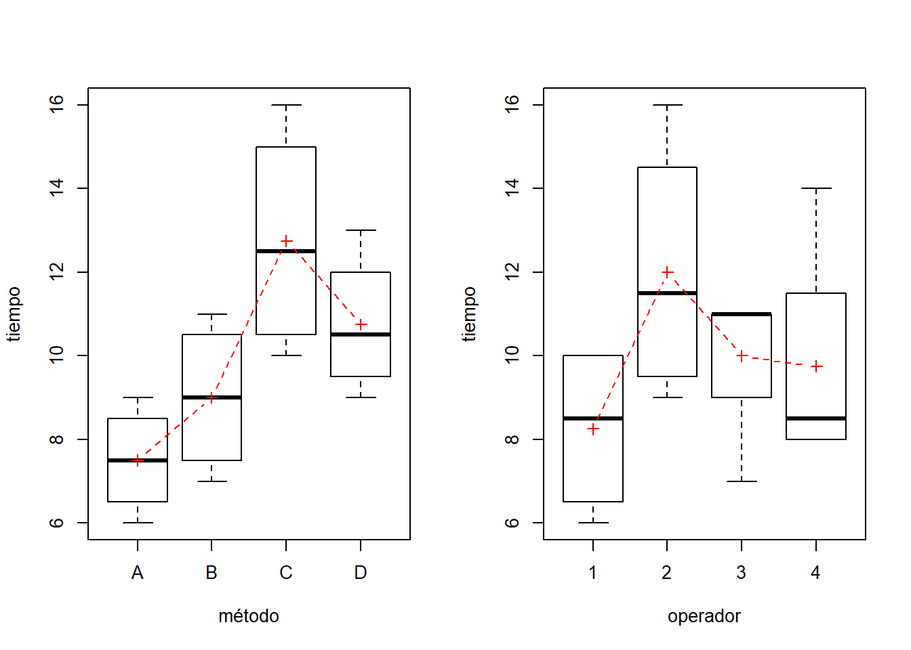
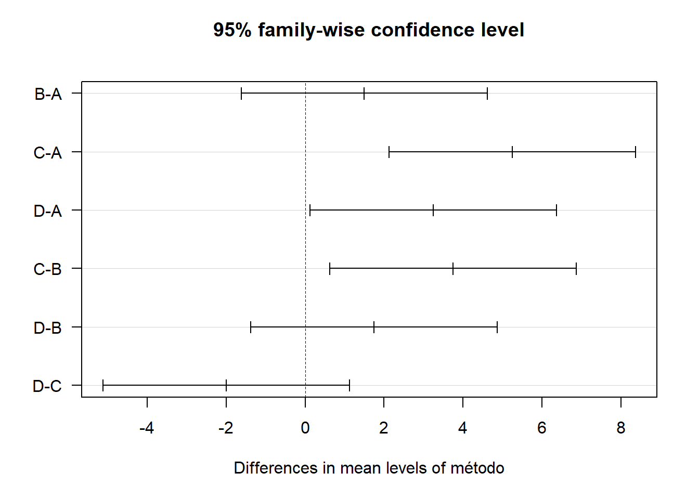
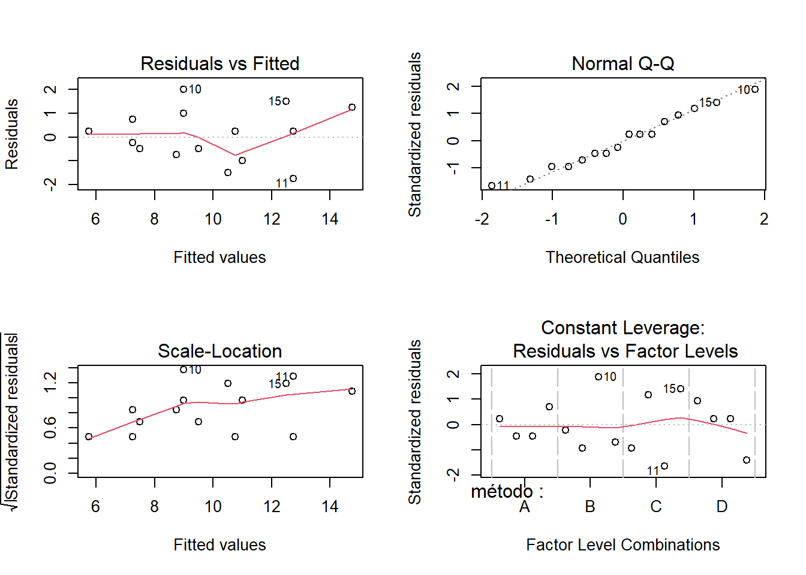

Un experimento puede involucrar uno o más factores con efecto sobre la respuesta.
Compara los efectos de diferentes tratamientos y bloques, aplicados a las unidades experimentales sobre condiciones diferentes.
Las unidades experimentales son agrupadas en conjuntos de tal forma que dos unidades experimentales en el mismo grupo son similares y pueden ser medidas bajo condiciones experimentales similares.
Los grupos de unidades experimentales similares son llamados bloques.
Las condiciones que varían de bloque a bloque forman los niveles del factor de bloqueo.
El propósito de bloquear es prevenir que diferencias grandes en las unidades experimentales enmascaren las diferencias entre los niveles del factor de tratamiento.
Permite que los tratamientos sean examinados bajo diferentes condiciones experimentales.
Los niveles de un factor de bloqueo son agrupamientos de características que no pueden ser medidas convenientemente.
##Ejemplo
Los experimentadores agrícolas pueden saber que parcelas cercanas en un campo son similares, en tanto que las parcelas lejanas no lo son.
Los experimentadores industriales pueden saber que dos unidades producidas por una misma máquina tienen características similares, mientras que aquellas producidas por dos máquinas distintas son algo diferentes.
Los experimentadores clínicos pueden saber que las mediciones tomadas sobre el mismo sujeto serán similares, mientras que aquellas tomadas sobre sujetos distintos no lo serán.
##ASPECTOS DEL DISEÑO EN BLOQUE
Considere b bloques, de tamaño k
a niveles del factor de estudio
Una vez determinado el número de bloques y se hayan agrupado a las unidades experimentales en tales grupos, a continuación se asignan las unidades a los tratamientos.
La mejor asignación a cada tratamiento es distribuir el mismo número de unidades experimentales en cada bloque.
Si el tamaño del bloque k es múltiplo del número de niveles o tratamientos del factor, el diseño recibe el nombre de ** bloques completos**
Si el tamaño de bloque no es múltiplo de a, entonces el diseño es conocido como un diseño de bloques incompletos
Se realiza un estudio para comprobar la efectividad en el retraso del crecimiento de bacterias utilizando cuatro soluciones diferentes para lavar los envases de la leche. El análisis se realiza en el laboratorio y sólo se pueden realizar seis pruebas en un mismo día. Como los días son una fuente de variabilidad potencial, el investigador decide utilizar un diseño aleatorizado por bloques, pero al recopilar las observaciones durante seis días no ha sido posible aplicar todos los tratamientos en cada día, sino que sólo se han podido aplicar dos de las cuatro soluciones cada día. Se decide utilizar un diseño en bloques incompletos balanceado.
| dias | ||||||
|---|---|---|---|---|---|---|
| Soluciones | 1 | 2 | 3 | 4 | 5 | 6 |
| solución 1 | 12 | 24 | 31 | |||
| solución 2 | 21 | 20 | 21 | |||
| solución 3 | 19 | 18 | 19 | |||
| solución 4 | 15 | 19 | 47 |
En este experimento se tienen b=6 bloques que son los dias, de tamaño k=2, mientras que los tratamientos a=4, corresponden a las 4 soluciones
##Diseño en bloques completos al azar
Este diseño con a tratamientos y con N=ab unidades experimentales agrupadas en b bloques.
las unidades dentro de un bloque son similares y unidades en bloques diferentes son sustancialmente distintas.
Las unidades experimentales en cada bloque son asignadas aleatoriamente a los a tratamientos de modo que cada tratamiento es asignado a una unidad por bloque.
Una tabla de entrada de datos para este modelo es:
| Bloques | |||||||
|---|---|---|---|---|---|---|---|
| Tratamientos | 1 | 2 | … | j | … | b | Medias de tratamientos |
| 1 | \(Y_{11}\) | \(Y_{12}\) | … | \(Y_{1j}\) | … | \(Y_{1b}\) | \(\bar{Y_{1\bullet}}\) |
| 2 | \(Y_{21}\) | \(Y_{22}\) | … | \(Y_{2j}\) | … | \(Y_{2b}\) | \(\bar{Y_{2\bullet}}\) |
| … | … | … | … | … | … | … | … |
| i | \(Y_{i1}\) | \(Y_{i2}\) | .. | \(Y_{ij}\) | … | \(Y_{ib}\) | \(\bar{Y_{i\bullet}}\) |
| … | … | … | … | … | … | … | … |
| a | \(Y_{a1}\) | \(Y_{a2}\) | .. | \(Y_{aj}\) | … | \(Y_{ab}\) | \(\bar{Y_{a\bullet}}\) |
| Medias de bloques | \(Y_{\bullet 1}\) | \(Y_{\bullet 2}\) | .. | \(Y_{\bullet j}\) | … | \(Y_{\bullet i}\) | Media global \(\bar{Y_{\bullet \bullet}}\) |
##Modelo ANOVA
\[\Large Y_{ij}=\mu+\alpha_i+\beta_j+\varepsilon_{ij}\]
Donde
\(\large Y_{ij}\) es la Variable aleatoria que representala medición del bloque j, del tratamiento i.
\(\large \mu\) denota la respuesta global promedio
\(\large \alpha\) es el efecto del i-ésimo tratamiento sobre el promedio global
-\(\large \beta_j\) es el efecto del j-ésimo bloque
Este modelo asume que no existe interacción entre el factor de interés y el factor de bloqueo; en muchas situaciones esta presunción será razonable, sin embargo, si se sospecha que hay interacción, el tamaño del bloque deberá ser incrementado para permitir estimar estos efectos.
Los niveles del factor de bloque representan agrupamientos intencionales de las unidades experimentales, mientras que los tratamientos son asignados de manera aleatoria a las unidades experimentales.
El interés no está centrado en las medias de los bloques, si no en la suma de cuadrados medios debida al factor de bloqueo con el MSE del modelo, para determinar si bloquear fue o no benéfico en el experimento.
| Fuente de variación | Grados de libertad | Suma de cuadrados | cuadrados medios | Valores esperados |
|---|---|---|---|---|
| Factor A | a-1 | SSA | \(MSA=SSA/(a-1)\) | \(\Large E(MSA)=\sigma^2+ \frac{\sum_{i=1}^n\alpha_i^2}{a-1}\) |
| Bloque | b-1 | SSB | \(MSB=SSB/(b-1)\) | \(\Large E(MSB)=\sigma^2+ \frac{\sum_{i=1}^n\beta_i^2}{a-1}\) |
| Error | (a-1)(b-1) | SSE | \(MSE=SSE/(a-1)(b-1)\) | \(E(MSE)=\sigma^2\) |
| Total | ab-1 | SST |
Fórmulas
Las sumas de cuadrados del modelo ANOVA SST=SSA+SSB+SSE
\[\Large SST=\sum_{i=1}^a \sum_{j=1}^{b}(Y_{ij}-\bar{Y}_{\bullet \bullet})^2=\sum_{i=1}^a \sum_{j=1}^{n_i} Y^2_{ij}-ab\bar{Y}_{\bullet \bullet}^2 \]
-La variabilidad en la respuesta explicada por el factor A, con a -1 grados de libertad, está dada por:
\[\Large SSA=\sum_{i=1}^a \sum_{j=1}^{b}(Y_{i\bullet}-\bar{Y}_{\bullet \bullet})^2=b\sum_{i=1}^a \bar{Y^2_{i\bullet}}-ab\bar{Y}_{\bullet \bullet}^2 \]
-La variabilidad en la respuesta explicada por el bloque B, con b-1 grados de libertad, está dada por:
\[\Large SSB=\sum_{i=1}^a \sum_{j=1}^{b}(Y_{\bullet j}-\bar{Y}_{\bullet \bullet})^2=a\sum_{i=1}^a \bar{Y^2_{\bullet j}}-ab\bar{Y}_{\bullet \bullet}^2 \]
\[\Large SSE=SST-SSA-SSB\]
La media muestral en el nivel i del factor de tratamiento está dada por: \[\Large \hat {\mu}_i=\bar{Y}_{i \bullet}=\frac{1}{b} \sum_{j=1}^b Y_{ij}\]
La media muestral en el nivel j del bloque está dada por:
\[\Large \hat {\mu}_j=\bar{Y}_{ \bullet j }=\frac{1}{a} \sum_{j=1}^a Y_{ij}\]
Hipótesis de interés
La prueba de hipótesis asociada al ANOVA esta dado por:
\(\Large H_0=\mu_1=\mu_2=...=\mu_i\)
\(\Large H_1= \mu_1\not=\mu_2 \not =...\not =\mu_i\)
Notas de interés
Si el MSB es considerablemente mayor que el MSE, esto sugiere que la creación de bloques valió la pena en el sentido de que sirvió para reducir el tamaño del error experimental.
Recuerde que no hay conclusión estadística acerca de la igualdad de medias de bloques o de significancia de efectos de bloques; la comparación se hace como una forma de establecer la utilidad de haber creado bloques en el experimento, proporciona información para la planeación futura de experimentos similares.
También se realiza la prueba de contrastes entre medias por medio de la prueba de intervalos tukey
se verifica independencia, normalidad y varianza constante en los residuales
Un equipo de mejora investiga el efecto de cuatro métodos de ensamble A, B, C, y D, sobre el tiempo de ensamble en minutos. En primera instancia la estrategia experimental fue aplicar cuatro veces los cuatro métodos de ensamble en orden aleatorio en un diseño completamente aleatorizado. Sin embargo, los experimentadores se dan cuenta que hay cuatro operadores con distintas destrezas y consideran que esto puede afectar de manera significativa los tiempos de ensamble, y por ende la comparación de los métodos, entonces debe utilizarse un diseño de bloques completos aleatorizados para controlar activamente en el experimento a los operadores que realizarán el ensamble. Los datos recolectados en este diseño fueron los siguientes:
| Método | ||||
|---|---|---|---|---|
| Operadores | A | B | C | D |
| 1 | 6 | 7 | 10 | 10 |
| 2 | 9 | 10 | 16 | 13 |
| 3 | 7 | 11 | 11 | 11 |
| 4 | 8 | 8 | 14 | 9 |
Se desea determinar si existen diferencias entre los cuatro métodos y cómo se diferencian, además elegir el mejor método, si lo hay.

El modelo estadístico es:
\[\Large Y_{ij}=\mu+\alpha_i+\beta_j+\varepsilon_{ij}\]
con i=1,2,3,4 para denotar los métodos A,B,C,D y j=1,2,3,4 para los operadores
Donde
\(\large Y_{ij}\) es la Variable aleatoria que representala medición del bloque j, del tratamiento i.
\(\large \mu\) denota el tiempo promedio global
\(\large \alpha\) es el efecto del i-ésimo método sobre el tiempo de ensamble.
\(\large \beta_j\) es el efecto del j-ésimo operador sobre el tiempo de ensamble
Bajo los puestos de que
\[\large \sum_{i=1}^4\alpha_i=\sum_{j=1}^4\beta_j=0\] Además \[\Large \varepsilon_{ij} \sim N(0,\sigma^2)\]
ANOVA:
library(gmodels)
library(multcomp)## Warning: package 'multcomp' was built under R version 4.0.5## Loading required package: mvtnorm## Loading required package: survival## Loading required package: TH.data## Loading required package: MASS##
## Attaching package: 'MASS'## The following object is masked from 'package:dplyr':
##
## select## The following object is masked from 'package:plotly':
##
## select##
## Attaching package: 'TH.data'## The following object is masked from 'package:MASS':
##
## geysermétodo=factor(rep(c("A","B","C","D"),4))
operador=factor(c(rep(1,4),rep(2,4),rep(3,4),rep(4,4)))
tiempo=c(6,7,10,10,9,10,16,13,7,11,11,11,8,8,14,9)
ensamble=data.frame(método,operador,tiempo)
#Anova
diseño=aov(tiempo~método+operador)
anova(diseño)## Analysis of Variance Table
##
## Response: tiempo
## Df Sum Sq Mean Sq F value Pr(>F)
## método 3 61.5 20.5 10.25 0.002919 **
## operador 3 28.5 9.5 4.75 0.029846 *
## Residuals 9 18.0 2.0
## ---
## Signif. codes: 0 '***' 0.001 '**' 0.01 '*' 0.05 '.' 0.1 ' ' 1\(\Large H_0= \alpha_a=\alpha_b=\alpha_c=\alpha_D\)
\(\Large H_1= Algun \quad par \quad \alpha_i\not= \alpha_j\)
El test de hipótesis es rechazado con un valor p de 0.0029 a un nivel de significancia de 0.05, es decir, los tiempos medios de ensamble no son iguales para todos los métodos.
Para evaluar la eficiencia del diseño tenemos que la seudo – prueba sobre los efectos de bloque (operador) tiene un \(F_0=4.75\) y un valor p: \(P(f_{3.9>4.75})=0.0298\), que nos indica el bloqueo por operario resultó útil o eficiente para reducir el error experimental y por tanto un ahorro en cuanto al número de réplicas necesarias para detección de diferencias entre los métodos.
library(gmodels)
library(multcomp)
método=factor(rep(c("A","B","C","D"),4))
operador=factor(c(rep(1,4),rep(2,4),rep(3,4),rep(4,4)))
tiempo=c(6,7,10,10,9,10,16,13,7,11,11,11,8,8,14,9)
ensamble=data.frame(método,operador,tiempo)
TukeyHSD(diseño,"método",conf.level=0.95)## Tukey multiple comparisons of means
## 95% family-wise confidence level
##
## Fit: aov(formula = tiempo ~ método + operador)
##
## $método
## diff lwr upr p adj
## B-A 1.50 -1.6217987 4.621799 0.4758801
## C-A 5.25 2.1282013 8.371799 0.0024211
## D-A 3.25 0.1282013 6.371799 0.0412298
## C-B 3.75 0.6282013 6.871799 0.0195634
## D-B 1.75 -1.3717987 4.871799 0.3548246
## D-C -2.00 -5.1217987 1.121799 0.2566550plot(TukeyHSD(diseño,"método",conf.level = 0.95),cex.lab=0.8,las=1)
La prueba de hipótesis de interés es:
\(\Large H_o=\mu_i=\mu_j\)
\(\Large H_1=\mu_i\not=\mu_j\)
Como vemos Tukey define tres grupos de medias que se traslapan:
grupo 1: métodos C y D grupo 2: métodos D y B
grupo 3: métodos A y B.
Hay un problema de potencia del procedimiento debido a la gran dispersión en los datos en algunos operarios y métodos como veremos.
library(gmodels)
library(multcomp)
método=factor(rep(c("A","B","C","D"),4))
operador=factor(c(rep(1,4),rep(2,4),rep(3,4),rep(4,4)))
tiempo=c(6,7,10,10,9,10,16,13,7,11,11,11,8,8,14,9)
ensamble=data.frame(método,operador,tiempo)
attach(ensamble)## The following objects are masked _by_ .GlobalEnv:
##
## método, operador, tiempo#medias dE tratamientos con sus INTERVALOS
##divide el marco de datos por método
met=split(ensamble,método)
##Método A
metA=met$A
t.test(metA$tiempo,conf.level = 0.95)##
## One Sample t-test
##
## data: metA$tiempo
## t = 11.619, df = 3, p-value = 0.001369
## alternative hypothesis: true mean is not equal to 0
## 95 percent confidence interval:
## 5.44574 9.55426
## sample estimates:
## mean of x
## 7.5##Método B
metB=met$B
t.test(metB$tiempo,conf.level = 0.95)##
## One Sample t-test
##
## data: metB$tiempo
## t = 9.859, df = 3, p-value = 0.002219
## alternative hypothesis: true mean is not equal to 0
## 95 percent confidence interval:
## 6.094837 11.905163
## sample estimates:
## mean of x
## 9##Método C
metC=met$C
t.test(metC$tiempo,conf.level = 0.95)##
## One Sample t-test
##
## data: metC$tiempo
## t = 9.26, df = 3, p-value = 0.002665
## alternative hypothesis: true mean is not equal to 0
## 95 percent confidence interval:
## 8.368113 17.131887
## sample estimates:
## mean of x
## 12.75##Método D
metD=met$D
t.test(metD$tiempo,conf.level = 0.95)##
## One Sample t-test
##
## data: metD$tiempo
## t = 12.589, df = 3, p-value = 0.001081
## alternative hypothesis: true mean is not equal to 0
## 95 percent confidence interval:
## 8.032469 13.467531
## sample estimates:
## mean of x
## 10.75library(gmodels)
library(multcomp)
método=factor(rep(c("A","B","C","D"),4))
operador=factor(c(rep(1,4),rep(2,4),rep(3,4),rep(4,4)))
tiempo=c(6,7,10,10,9,10,16,13,7,11,11,11,8,8,14,9)
ensamble=data.frame(método,operador,tiempo)
diseño=aov(tiempo~método+operador)
par(mfrow=c(2,2))
plot(diseño)
residuales=residuals(diseño)
shapiro.test(residuales)##
## Shapiro-Wilk normality test
##
## data: residuales
## W = 0.97299, p-value = 0.8844bartlett.test(tiempo ~ método )##
## Bartlett test of homogeneity of variances
##
## data: tiempo by método
## Bartlett's K-squared = 1.5989, df = 3, p-value = 0.6596Validemos ahora los supuestos de normalidad y de varianza constante mediante gráficos de residuales: La normalidad parece un supuesto razonable para los errores en este experimento. Sin embargo, hay problemas con el supuesto de varianza constante. Con los métodos B y C la dispersión de los residuales es mayor comparativamente a la dispersión en los métodos A y D. Con el método A hay menos dispersión. A nivel del operador 3 la dispersión de los residuales es mayor aparentemente debido a una observación que es subestimada. A pesar de estos inconvenientes es posible llegar a una conclusión: “Elegir como mejor método el A, dado que tiene menor tiempo promedio observado y menor dispersión” (esto último indica que los operadores con este método son más consistentes)
Prueba de normalidad \(\Large H_o=\) Los residuos son normales \(\Large H_o=\) Los residuos no son normales
Prueba de barlett para homogeneidad de varianzas
\(\Large H_0=\sigma_A^2=\sigma_B^2=...=\sigma_D^2\)
\(\Large H_1= \sigma_A^2\not=\sigma_B^2 \not =...\not =\sigma_D^2\)